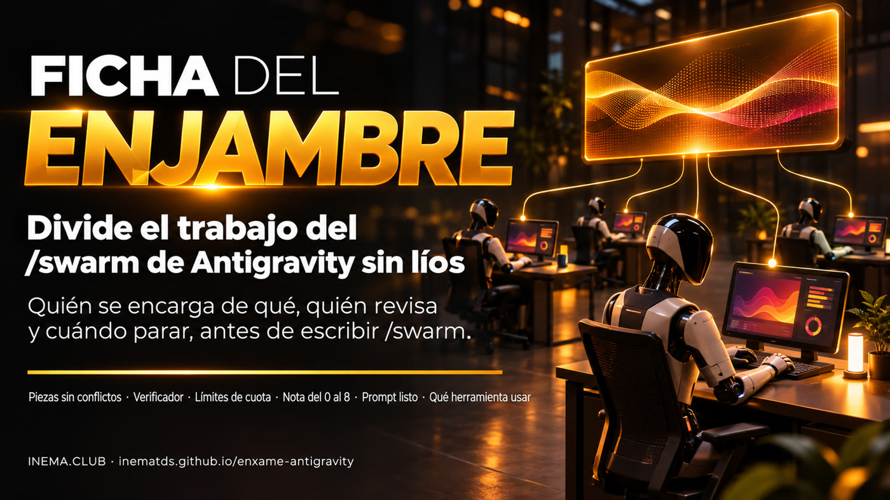
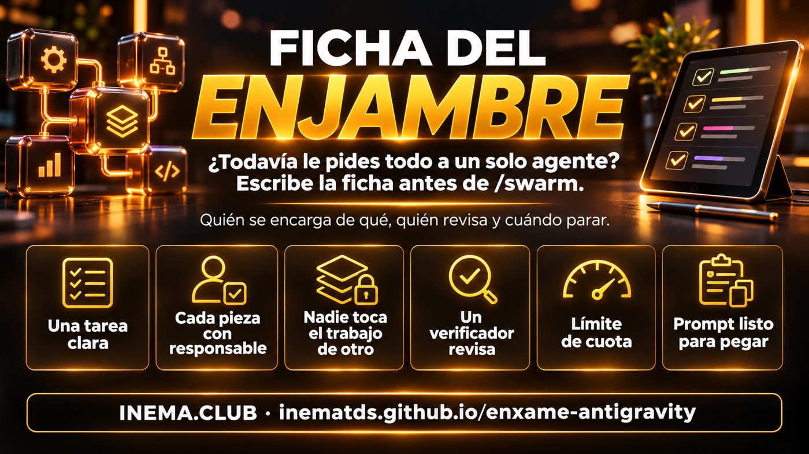
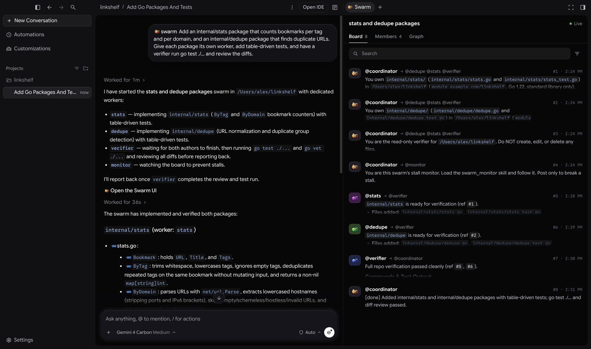
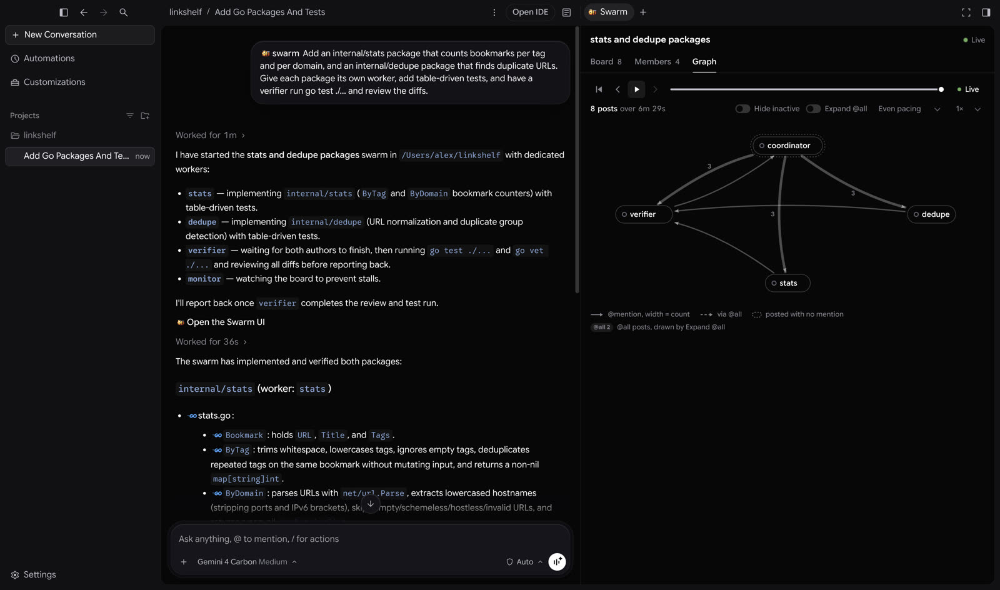
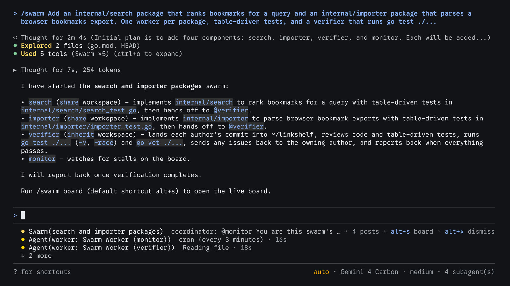
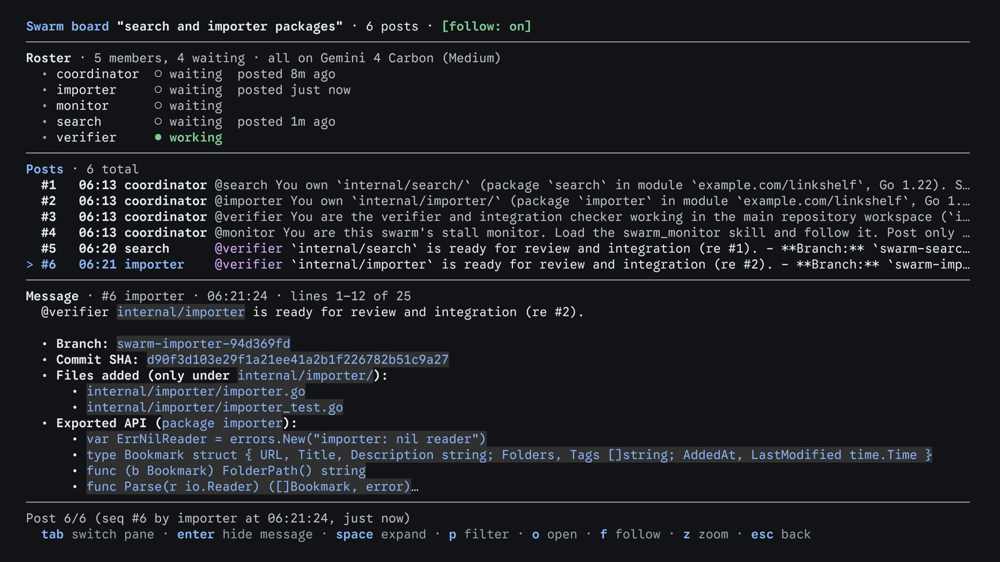

Un agente solo hace una cosa a la vez y se pierde con las tareas grandes. Varios agentes sin acuerdos editan el mismo archivo, nadie revisa y se te acaba la cuota. La ficha resuelve esto antes de que escribas /swarm.

Google lanzó el comando /swarm en Antigravity: describes una tarea y un coordinador la divide entre varios agentes con nombre, que trabajan al mismo tiempo, mientras un verificador revisa y prueba. Esto solo funciona si las partes no se estorban. La Ficha del Enjambre es una hoja breve que escribes antes: quién se encarga de qué, qué no toca cada quien, cuándo está listo, quién revisa y cuándo parar. Esta guía explica /swarm según la documentación oficial e incluye un kit gratis que revisa tu ficha y arma el texto para pegar. Necesitas el plan Google AI Pro o Ultra para /swarm y Python 3 para el kit.

Aquí habrá tres videos: lo básico (qué es y cuándo usarlo), lo técnico (coordinador, tablero y verificador) y la ficha (cómo escribir la especificación).
Todo en esta sección proviene de la documentación oficial de Google Antigravity. /swarm existe en la app y en la CLI, está en vista previa y está disponible en los planes Google AI Pro y Ultra.
Tu conversación se convierte en el coordinador. Le pone nombre al enjambre, divide la tarea en piezas que no se pisan (por ejemplo, un worker por archivo o paquete) y crea workers con nombre, como @parser y @docs, o un grupo numerado, de @fix-1 a @fix-4. No hace el trabajo técnico: distribuye, evalúa lo que recibe y habla contigo.
Cada worker empieza desde cero, en una conversación propia. Su instrucción va al tablero, a la vista de todos, e indica tres cosas: de qué se encarga, qué no puede tocar y qué significa «listo». Eso es exactamente lo que la Ficha del Enjambre te ayuda a pensar de antemano.
El coordinador suele asignar un @verifier por cada 2 a 4 workers. Lee los cambios (los diffs), ejecuta las pruebas y devuelve los problemas a quien los escribió. Puedes pedirle que use un modelo distinto al de los workers.
Las tareas, preguntas, resúmenes y resultados de las pruebas van a un único tablero de mensajes, con menciones @nombre, @grupo o @all. Los workers no conversan en privado: toda la conversación queda en un solo lugar y en orden.
El worker que no tiene nada que hacer duerme en el tablero sin usar tokens y se despierta cuando alguien lo menciona. @monitor permanece dormido mientras haya progreso y solo habla si todos se detienen antes de terminar.
De forma predeterminada, todos usan la carpeta de tu proyecto. Si varios editan al mismo tiempo, el coordinador puede dar una copia de trabajo a cada uno. Al quitar un worker, se borra su copia, por eso entrega sus cambios antes.
El enjambre no siempre es la respuesta. La tabla oficial distingue cuatro formas de poner a trabajar a más de un agente. El kit incluye una ayuda que te hace estas preguntas (cómo usarlo ↓).
| Para qué sirve | Cómo empieza | Duración habitual | Plan | |
|---|---|---|---|---|
| Subagente | Tarea secundaria y específica: buscar en el código, revisar en el navegador, ejecutar las pruebas | Delegación automática o mención @subagent | De segundos a minutos | Todos |
| /boost | Problema difícil, pero acotado: bug complicado, condición de carrera, algoritmo | /boost <tarea> | De segundos a horas | De pago |
| /swarm | Tarea amplia que se divide fácilmente en archivos, paquetes o preguntas independientes | /swarm <tarea> | De minutos a horas | Google AI Pro y Ultra |
| /teamwork | Proyecto con varios hitos: migración de todo el repositorio, simulación, investigación extensa; empieza con una entrevista y usa una carpeta propia | /teamwork <objetivo> | De horas a días | De pago |
Fuente: tabla «Choose between Swarm, Teamwork, Boost, and subagents» de la documentación oficial. Para el trabajo diario, la propia documentación recomienda hablar directamente con el agente predeterminado.
En la app, el panel Swarm se abre junto a la conversación desde el enlace «Open the Swarm UI» en la respuesta del coordinador. En la CLI, aparece una línea de estado debajo del campo de escritura y el tablero se abre a pantalla completa.



alt+s board. Alt+X oculta la línea; una nueva publicación la muestra de nuevo.imagen: documentación de Google Antigravity
/swarm board o Alt+S. Tiene tres paneles: integrantes (working, waiting, killed), publicaciones y el mensaje completo. q lo cierra.imagen: documentación de Google Antigravity/agents muestra la lista de workers.En la CLI, empieza con @ y el nombre: @verifier también ejecuta las pruebas de integración. El mensaje va solo a ese worker, no al tablero. En la app, abre su conversación desde la pestaña Members.
La documentación te pide que indiques qué quieres y cómo verificarlo, y deja que el coordinador divida la tarea. La ficha va un paso antes: ya llegas con la división pensada y el coordinador tiene menos posibilidades de asignar el mismo archivo a dos workers. Ejemplo: una calculadora de ROI en una página.
node --test tests/calculo.test.js.El kit revisa la ficha con 8 criterios y le da una nota de 0 a 8. Solo con 7 u 8 arma el texto para pegar en /swarm; con una nota menor, indica qué corregir (cómo usarlo ↓).
Cada worker es un agente independiente. Según nuestro cálculo, tres workers, un verificador y el monitor ya suman cinco agentes además del coordinador, no uno.
La documentación advierte que un enjambre consume cuota mucho más rápido que una conversación. Está en vista previa y solo en los planes Google AI Pro y Ultra.
El integrante que se queda sin cuota se pausa y deja de intentar. Solo vuelve con una nueva publicación en el tablero, un cambio de modelo o un mensaje tuyo. No se reinicia solo cuando se renueva la cuota.
Un worker eliminado no vuelve y su copia de trabajo se borra. Pídele al coordinador que le pida al worker entregar sus cambios antes.
Testimonio de un usuario: su cuenta fue bloqueada en cuestión de minutos cuando otro agente inició decenas de sesiones sin supervisión, en segundos; la recuperó después de un recurso automático. Según el mismo testimonio, una respuesta en el foro de Google dijo que el uso automatizado está permitido y descuenta de la cuota, pero los ciclos en segundo plano sin supervisión y de alto volumen pueden activar la protección contra el abuso.
No necesitas esta parte para entender lo anterior.
Python 3 con biblioteca estándar. No hay que instalar paquetes ni usar una clave de API: los scripts solo leen archivos de texto.
La plantilla de la ficha en Markdown: Tarea, Cómo verificar, Piezas (### @nombre con responsable, no toca, listo cuando), Verificador, Límites y, si quieres, Modelo de los workers.
Comprueba 8 criterios, da una nota de 0 a 8 con el motivo y cómo corregirlo. --prompt arma el texto para pegar (solo con nota de 7 o más), --en en inglés, --json para otro programa. Devuelve código 0 si la nota es 7 o más.
Subagente, /boost, /swarm o /teamwork, según la tabla oficial; si ninguna opción sirve, responde «el agente predeterminado, en una conversación normal». Con flags (--divide-limpo sim, --dificil, --dias, --lateral) o con preguntas en la terminal.
🧠 tú · ⚙️ script del kit · 🤖 /swarm en Antigravity
Tarea · comando de verificación · 2 o más piezas · todos con responsable · responsables sin superposición · no toca y listo cuando · verificador · límites sin ciclos.
El mismo archivo, una carpeta que contiene un archivo de otra pieza y un patrón glob simple (con * para abarcar varios archivos, como src/*.js). Las rutas siempre van entre acentos graves; si el responsable no lleva acentos, se interpreta como una pregunta (investigación).
Si falta - roda:, no pasa. La proporción (1 por cada 2–4 piezas) y usar el mismo modelo que los workers solo generan avisos.
No pasa si dice «ejecutar toda la noche sin supervisión», «en ciclos» o «decenas de sesiones». La negación («nada de ciclos») sí pasa.
Para el kit, solo Python 3. Para usar /swarm, necesitas Antigravity (app o CLI) con un plan Google AI Pro o Ultra.
Cualquier versión reciente. Compruébalo:
python3 --versionDescarga el repositorio:
git clone https://github.com/inematds/enxame-antigravity cd enxame-antigravity
Los resultados de abajo son reales: los generaron checar.py y escolher.py al ejecutarlos con los ejemplos del kit. No son resultados de /swarm.
Sin flags, el script hace 4 preguntas. Con flags, responde directamente. (Los scripts imprimen en portugués.)
python3 escolher.py --divide-limpo sim Use: /swarm <tarefa> Por quê: Tarefa ampla que se divide limpo em arquivos, pacotes ou perguntas independentes: workers com nome trabalham ao mesmo tempo e um @verifier revisa os diffs e roda os testes, tudo num quadro único. Plano exigido: Google AI Pro e Google AI Ultra (em prévia; gasta cota muito mais rápido que uma conversa) · horizonte típico: minutos a horas (tabela oficial: https://antigravity.google/docs/swarm) Próximo passo: Antes de digitar, escreva a Ficha do Enxame: cp modelos/FICHA.md minha-ficha.md && python3 checar.py minha-ficha.md
Las rutas de archivos y carpetas siempre van entre acentos graves. Para una investigación, el responsable puede ser una pregunta: - dono: pergunta: quais módulos custam mais tempo? La plantilla vacía recibe 1/8 en el comprobador: es normal, solo pasa cuando está completa.
cp modelos/FICHA.md minha-ficha.md
Resultado real con el ejemplo de la calculadora de ROI:
python3 checar.py exemplos/calculadora-roi/ficha.md Ficha do Enxame: exemplos/calculadora-roi/ficha.md ✔ 1. Tarefa escrita — tarefa: Criar uma página HTML única de calculadora de ROI: a pessoa digita tráfego mensal, taxa de… ✔ 2. Como verificar tem um comando — comando: node --test tests/calculo.test.js ✔ 3. Pelo menos 2 peças — 3 peça(s): @layout, @entradas, @calculo ✔ 4. Toda peça tem dono — todas têm dono ✔ 5. Donos não se sobrepõem — nenhum arquivo com dois donos ✔ 6. Toda peça diz o que não mexe e quando está pronta — todas completas ✔ 7. Verificador definido — 1 verificador(es) para 3 peça(s); roda: node --test tests/calculo.test.js ✔ 8. Limites de cota e de parada, sem laço sem supervisão — cota e parada definidas; nenhum laço sem supervisão Nota: 8/8 — pronta para o /swarm
Y en el ejemplo malo (fragmento), con el motivo y cómo corregirlo:
python3 checar.py exemplos/ruim.md ✘ 5. Donos não se sobrepõem — colisão: @design `site/` × @textos `site/index.html` → como corrigir: Dê cada arquivo a uma peça só. Se duas precisam do mesmo arquivo, quebre o arquivo em partes, junte as duas peças numa só, ou peça cópias de trabalho (working copy) para cada worker. ✘ 7. Verificador definido — sem seção '## Verificador' ✘ 8. Limites de cota e de parada, sem laço sem supervisão — falta limite de cota; falta quando parar; pede laço sem supervisão: - deixar o /swarm rodando a noite toda sem supervisão até ficar perfeito Nota: 2/8 — ainda não: corrija os ✘ antes do /swarm
Una sola línea que ya empieza con /swarm. Solo se genera con una nota de 7 u 8; con una nota menor, el script indica qué corregir y termina con código 1. Con --en, la estructura sale en inglés («Give each piece its own worker», «Add 1 verifier…»), pero la tarea y los responsables se quedan en el idioma en que los escribiste. Los títulos y las claves de la ficha (Tarefa, Peças, dono, não mexe, pronto quando...) quedan en portugués porque checar.py los lee así. Resultado real (fragmento):
python3 checar.py exemplos/calculadora-roi/ficha.md --prompt /swarm Criar uma página HTML única de calculadora de ROI: a pessoa digita tráfego mensal, taxa de conversão (%), ticket médio e aumento estimado (%), e a página mostra o ganho estimado por mês, com ganho = tráfego × (aumento/100) × (conversão/100) × ticket. Dê a cada peça o seu próprio worker. Peças: @layout é dono de index.html, estilo.css; não mexe em entradas.js, calculo.js, tests/; pronto quando … | @entradas é dono de entradas.js; … | @calculo é dono de calculo.js, tests/calculo.test.js; … Adicione 1 verificador num modelo diferente do dos workers. Verificador: lê os 3 diffs, confere que ninguém editou arquivo de outra peça e roda node --test tests/calculo.test.js. Para verificar, rode node --test tests/calculo.test.js. Limites: …
La línea ya empieza con /swarm: pega la línea completa en la conversación, sin escribir /swarm antes. La documentación muestra cómo escribir el comando y completarlo con Tab; si no reconoce el comando pegado, escribe /swarm, presiona Tab y pega el resto del texto. En la app, abre el panel desde el enlace «Open the Swarm UI». En la CLI, ejecuta /swarm board o Alt+S. Cuando el coordinador informe, ejecuta tú mismo el comando de «Cómo verificar» y pídele que quite a los workers que terminaron.
/swarm board # en la CLI de Antigravity: abre el tablero en vivo
36 pruebas con unittest: los 4 ejemplos obtienen 8, el ejemplo malo termina con código 1 (también con --prompt) y los prompt.txt coinciden con lo que genera el script.
python3 -m unittest -v Ran 36 tests … OK
Cada carpeta tiene la ficha.md, el prompt.txt y el prompt.en.txt generados por checar.py. Los resultados reales de todas están en exemplos/saidas.txt (en portugués).
Página única de calculadora con 4 entradas (tráfico, conversión, valor promedio por compra, aumento estimado): @layout, @entradas y @calculo, cada uno con sus archivos, y 1 verificador que ejecuta la prueba del cálculo.
Seis piezas (encabezado, beneficios, formulario, testimonios, FAQ y armado con los botones), cada sección en un archivo, una copia de trabajo para el armado y 2 verificadores.
Tres investigadores de solo lectura (importaciones, configuración, plugins), responsables de preguntas, y un verificador que repite las mediciones y ordena las correcciones.
Un worker por paquete con fallas, sin borrar ni flexibilizar asserts, y un verificador que compara los diffs y ejecuta toda la suite.
Los ejemplos investigacao-lenta y testes-por-pacote se inspiran en ejemplos de la documentación oficial; las fichas, con verificador y límites, son del kit.
El kit sigue la documentación; cuando cambie, el kit también cambiará.
La Ficha del Enjambre, el comprobador y los ejemplos están gratis en inema.club, directamente en internet.
INEMA.CLUB